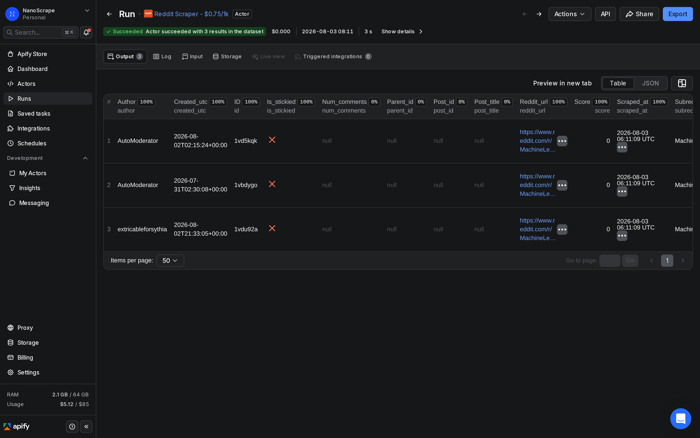
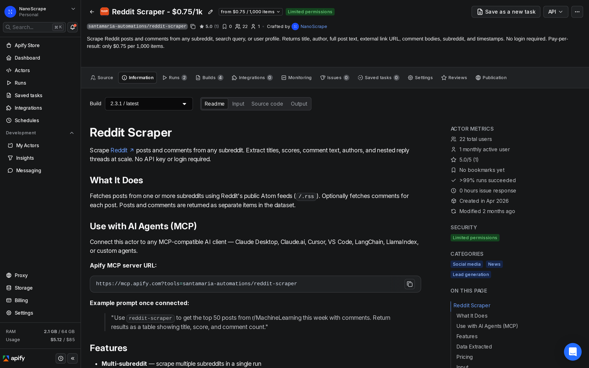
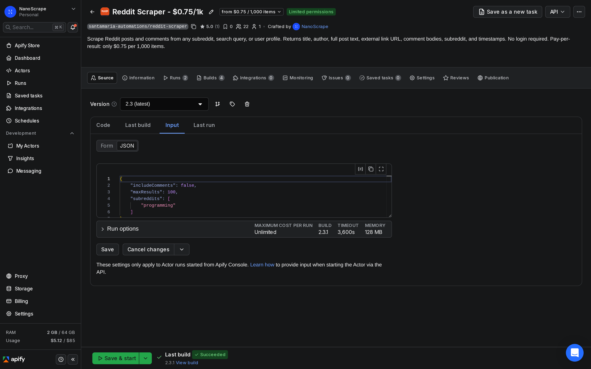
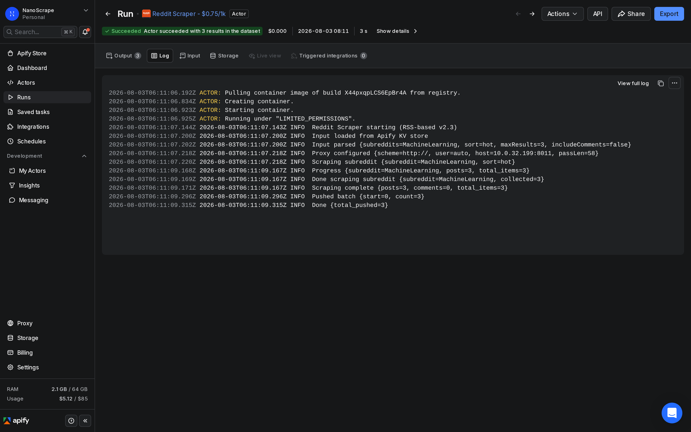

How to Collect Reddit Data for Sentiment Analysis Without the Reddit API
Reddit is one of the best sources of unfiltered public opinion. This tutorial shows how to collect posts and full comment threads from any public subreddit or search query, no Reddit account or API key required, and pipe the text straight into a sentiment classifier, an LLM, or a Google Sheet. About $0.75 per 1,000 items.

In this tutorial
What data you get
The actor returns two item types in the same dataset: posts and comments. Both are identified by a type field. For sentiment analysis you mainly care about the text fields, but the metadata around each item (subreddit, timestamps, is_stickied) is useful for filtering and trending.
Post fields
{
"id": "abc123",
"type": "post",
"subreddit": "SaaS",
"title": "Our churn rate doubled after the pricing change",
"author": "founder_vc",
"text": "We moved from per-seat to usage-based pricing three months ago...",
"url": "https://example.com/blog/pricing",
"score": 0,
"num_comments": null,
"is_stickied": false,
"created_utc": "2026-07-15T10:00:00Z",
"reddit_url": "https://www.reddit.com/r/SaaS/comments/abc123/",
"scraped_at": "2026-07-15T10:30:00Z"
}Comment fields
{
"id": "xyz789",
"type": "comment",
"subreddit": "SaaS",
"author": "helpful_cmo",
"text": "We had the same experience. Customers hated the surprise bills.",
"score": 0,
"parent_id": null,
"post_id": "abc123",
"post_title": "Our churn rate doubled after the pricing change",
"is_stickied": false,
"created_utc": "2026-07-15T11:15:00Z",
"reddit_url": "https://www.reddit.com/r/SaaS/comments/abc123/.../xyz789/",
"scraped_at": "2026-07-15T11:30:00Z"
}score and num_comments: Reddit removed access to its /.json endpoints in June 2026. The actor now uses Reddit's public Atom (/.rss) feeds. Atom feeds do not expose vote counts or comment counts, so score is always 0 and num_comments is always null. All other fields, including title, author, full post body text, URLs, and timestamps, are complete.For sentiment analysis the fields you will use most are title and text on posts, and text on comments. The created_utc field lets you track sentiment over time. The subreddit field lets you segment results by community.
Prerequisites
- A free Apify account. Sign up at the actor page. No credit card required. The free tier includes $5 of usage credit every month, which covers about 6,600 Reddit items.
- A list of subreddit names, a search query, or a brand name you want to monitor. No Reddit account or API credentials are needed.
- A way to analyze the text once you have it. Any of these work: a Python script with VADER or TextBlob, a spreadsheet with manual review, an LLM API call, or a no-code tool like n8n.
Step 1: Open the actor
- Go to the NanoScrape Reddit Scraper on Apify.
- Click Try for free. Sign in with Google or email. It takes about a minute.
- The actor opens in Apify Console on the Input tab.

Step 2: Configure your collection
In the Input tab, click JSON editor at the top right of the panel. The actor supports three collection modes. Pick the one that matches your use case:
Mode A: Subreddit monitoring
Collect the newest or hottest posts from one or more communities. Useful for tracking conversations in a specific niche over time.
{
"subreddits": ["SaaS", "startups", "Entrepreneur"],
"sort": "new",
"includeComments": true,
"commentDepth": 2,
"maxCommentsPerPost": 30,
"maxResults": 50
}Mode B: Brand and keyword monitoring
Search Reddit-wide for any keyword, product name, or competitor. The searchQuery field accepts any search string Reddit's own search would accept.
{
"searchQuery": "your brand name OR competitor name",
"sort": "new",
"includeComments": true,
"commentDepth": 1,
"maxCommentsPerPost": 20,
"maxResults": 100
}Mode C: User activity analysis
Pull all posts and comments from a specific Reddit user. Useful for studying an individual's public opinions, or for building training datasets from prolific contributors.
{
"usernames": ["example_user"],
"maxResults": 100
}includeComments. Post titles and bodies give you the main opinion signal, but comment threads often contain the most direct positive or negative reactions to a topic. Comments are billed at the same per-item rate as posts.
Step 3: Run and collect
Click Start at the top right. The actor boots immediately, fetches posts in the order you specified, and streams items into the dataset as it goes. A run collecting 50 posts without comments typically finishes in 20 to 30 seconds. Enabling comments at the settings above (50 posts, 30 comments each, depth 2) takes one to two minutes.

When the run finishes, the status changes to Succeeded. Click the Results tab to preview the dataset. Use the type column to filter between posts and comments.
Step 4: Export for analysis
From the Results tab, click Export to download the dataset:
- CSV - opens in Excel or Google Sheets. Each field becomes a column. Nested objects are automatically flattened. Filter on the
typecolumn to isolate posts or comments. - JSON - ideal for Python (pandas, NLTK, TextBlob, spaCy) or R. Full nested structure is preserved.
- JSONL - one object per line, useful for piping directly into an LLM API or a streaming database ingestion job.
- XLSX - for native Excel format with automatic column type detection.
https://api.apify.com/v2/datasets/{datasetId}/items?format=json&token={apiToken}. This is the approach to use in automated pipelines.Sentiment analysis workflows
Once you have the data, there are several ways to analyze it. Here are four patterns, from the simplest to the most powerful:
1. Manual review in a spreadsheet
Export to CSV and open in Google Sheets. Add a filter on the type column and set it to post to get a clean list of post titles. Add a column next to title and label each row positive, neutral, or negative by reading the text. This works well for smaller datasets (under 200 posts) where you want human judgment on nuanced topics.
2. Python with VADER
VADER is a rule-based sentiment analyzer that works well on social media text without any training. It runs locally, is free, and returns a compound score from -1.0 (most negative) to 1.0 (most positive) per text item. After exporting to JSON:
import json
from vaderSentiment.vaderSentiment import SentimentIntensityAnalyzer
analyzer = SentimentIntensityAnalyzer()
with open("reddit_data.json") as f:
items = json.load(f)
for item in items:
if item["type"] == "post":
text = (item.get("title") or "") + " " + (item.get("text") or "")
else:
text = item.get("text") or ""
if text.strip():
score = analyzer.polarity_scores(text)
item["sentiment"] = score["compound"]
item["label"] = (
"positive" if score["compound"] >= 0.05 else
"negative" if score["compound"] <= -0.05 else
"neutral"
)
with open("reddit_data_scored.json", "w") as f:
json.dump(items, f, indent=2)Install VADER with pip install vaderSentiment. The compound score is the most reliable single number for a simple positive / negative / neutral split.
3. LLM-based classification
For topics where word-level rules fall short (irony, domain-specific language, mixed opinions), pass the title and text to an LLM and ask it to classify sentiment. You can also prompt the model to extract specific entities (product names, features, competitors) alongside the sentiment label, which VADER cannot do.
import json, anthropic
client = anthropic.Anthropic()
def classify(item):
text = (item.get("title", "") + " " + item.get("text", "")).strip()
if not text:
return "neutral"
msg = client.messages.create(
model="claude-sonnet-5",
max_tokens=10,
messages=[{
"role": "user",
"content": (
"Classify the sentiment of this Reddit post as exactly one of: "
"positive, negative, neutral. Reply with only the label.\n\n"
+ text[:1000]
)
}]
)
return msg.content[0].text.strip().lower()Batch in groups of 50-100 to stay within API rate limits. The created_utc field on each item means you can sort the scored results chronologically and plot sentiment over time.
4. Tracking sentiment trends over time
Set up a daily scheduled run (see the n8n section below) using sort: "new" to always pull the freshest posts. Store each run's results in a database or append to a Google Sheet with a run_date column. Then pivot by week or month to see whether community sentiment around your product, brand, or niche is moving in a positive or negative direction.
Automate recurring monitoring with n8n
For brand monitoring or ongoing research, running the scraper manually each morning is not practical. Connect it to n8n and set up a scheduled workflow that collects new posts, scores sentiment, and writes results to a Google Sheet automatically.
- In n8n, create a new workflow.
- Add a Schedule Trigger node. Set it to run once a day or once a week.
- Add an HTTP Request node. Set Method to
POSTand URL to:https://api.apify.com/v2/acts/santamaria-automations~reddit-scraper/run-sync-get-dataset-items?token=YOUR_APIFY_TOKEN. Set the Body to JSON with your collection config. - Add a Code node (or an HTTP Request to your LLM API) to score sentiment on the returned items.
- Add a Google Sheets node to append results. Include columns for
type,subreddit,title,text,created_utc, and yoursentiment_labelcomputed in step 4. - Save and activate the workflow.
{
"searchQuery": "your brand name",
"sort": "new",
"includeComments": true,
"commentDepth": 1,
"maxCommentsPerPost": 10,
"maxResults": 50
}The run-sync-get-dataset-items endpoint runs the actor and returns results in a single HTTP response, which keeps the n8n workflow simple. A daily run with 50 posts and 10 comments each returns about 550 items and costs roughly $0.42.
@apify/n8n-nodes-apify.What it costs
- Actor start: $0.005 per run (one-time fee covering session setup and the first subreddit lookup).
- Per item: $0.00075 per post or comment. That is $0.75 per 1,000 items.
- No monthly fees. No minimum spend.
50 posts (no comments) = $0.04 ($0.005 + $0.038) 50 posts + 30 comments each (1,550 items) = $1.17 ($0.005 + $1.163) Daily brand-monitoring run, ~550 items/day ~ $12.50/month Free-tier allowance ($5/month) ~ 6,600 posts or comments
The Apify free tier gives every account $5 of usage credit each month. At $0.00075 per item, that covers about 6,600 Reddit posts or comments per month before you pay anything. A brand-monitoring run pulling 50 new posts every day costs about $0.04 per day for posts only, or about $1.17 per day if you include comments at the settings above.
FAQ
Do I need a Reddit account or API key?
No. The actor uses Reddit's public Atom (/.rss) feeds, which are accessible without authentication. No Reddit account, no API key, no OAuth app registration is required.
Why is the score field always 0?
Reddit removed access to its /.json endpoints in June 2026. The actor now uses Atom feeds, which are the only public surface still available without a registered API app. Atom feeds do not expose vote counts, so score is always returned as 0. If you need vote counts, you will need to use Reddit's official OAuth API.
Which is more accurate for Reddit: VADER or an LLM?
VADER is fast and free and handles most everyday English text well. It struggles with irony, sarcasm, and highly domain-specific language. LLMs (Claude, GPT-4o, etc.) handle all of those cases better but cost more per item and require an API call per text. For general-purpose brand monitoring, start with VADER and move to an LLM only for items where VADER's output seems off.
Can I search across all of Reddit, not just specific subreddits?
Yes. Use the searchQuery field instead of subreddits. The actor runs a Reddit-wide search and returns matching posts. Sort options in search mode: relevance, top, new, or hot.
How do I filter just posts vs just comments in the export?
Every item has a type field set to either post or comment. In a spreadsheet, add a filter on that column. In Python, use a list comprehension: posts = [x for x in items if x['type'] == 'post']. In pandas: df[df['type'] == 'comment'].
Can I scrape private or restricted subreddits?
No. The actor can only access subreddits and posts that are publicly visible on Reddit without logging in. Private, restricted, or adult-gated subreddits are not accessible.
Is scraping Reddit legal?
The actor only accesses data that is publicly visible on Reddit without logging in. The hiQ Labs v. LinkedIn ruling in the US established that scraping publicly accessible data is not a Computer Fraud and Abuse Act violation. Reddit's terms of service restrict automated access, so you take on responsibility for how you use the data. Consult a lawyer for specific compliance questions.
Related resources
- Reddit Scraper actor page: Full specs, pricing tiers, and comparison with alternatives.
- How to Scrape Reddit Posts and Comments: The companion tutorial covering actor setup, all input options, and the full output schema in depth.
- How to Collect and Analyze Tweets: The same workflow applied to Twitter/X: collect public tweets and run sentiment or engagement analysis.
- All NanoScrape tutorials: Step-by-step guides for every actor in the NanoScrape catalog.